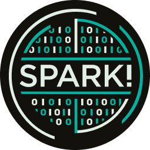
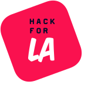
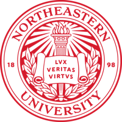
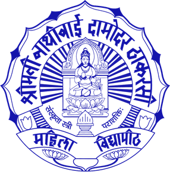

Simran Dhaliwal
Senior Product Designer
Summary
I design complex AI, enterprise, and B2B SaaS products, including AI/ML platforms, API workflows, and developer tools. I combine systems thinking, research, and AI-assisted prototyping to lead complex product initiatives, shape design practices across teams, and turn ambiguous problems into intuitive experiences. I also contribute to hiring and team growth, mentor designers, and partner closely with product and engineering teams to build cohesive products.
Experience
Red Hat
Senior Product Designer
- Redesigned and shipped model-access governance in Red Hat OpenShift AI, making access permissions and usage limits easier to understand and providing administrators with actionable guidance to audit access, identify configuration gaps, and investigate issues.
- Led a cross-functional journey-mapping workshop and reviewed concepts with customer-facing specialists. Used interactive code prototypes to align stakeholders on interactions, API constraints, and delivery priorities.
- Initiated and led a six-month design consistency initiative across a 20-designer organization, managing a 3-designer working group. Synthesized 20 survey responses and 11 interviews to identify barriers to guideline discoverability and reuse, prioritize improvements, and reduce feature-area silos. Established a framework for identifying, documenting, and developing reusable patterns, created a searchable guideline index and templates, and delegated and coordinated shared Figma library improvements.
- Designed and shipped AI model registration workflows for internally deployed and externally hosted models, covering model status, credential management, and provider routing.
- Built interactive prototypes with Cursor, Claude, React, and PatternFly to explore interaction patterns, validate technical feasibility, and support design reviews with product and engineering teams.
- Partnered with product, engineering, research, and content design to resolve trade-offs and guide designs through implementation.
- Contributed to hiring two members of the direct team, supporting team growth and design talent development.
Product Designer
- Designed Red Hat OpenShift API Designer from the ground up, from problem framing and research through information architecture, user flows, wireframes, and high-fidelity prototypes.
- Improved existing workflows and designed new functionality for Red Hat OpenShift Service Registry, partnering with product and engineering teams to refine requirements and validate designs.
- Coordinated design work, reviewed interfaces, mentored designers, and contributed to connected cloud-service experiences and PatternFly, Red Hat’s open-source design system.
Associate Product Designer
- Researched developer workflows for Red Hat OpenShift Streams for Apache Kafka, identifying usability issues and recommending improvements through research and usability testing.
- Led UX research and developed CLI guidelines for Red Hat OpenShift Application Services. Conducted competitive analysis, reviewed industry conventions, interviewed six developers, and facilitated an engineering workshop to establish shared usability expectations for command structure, flags, output, error messages, interactivity, and automation.
- Subsequent CLI releases included clearer flag descriptions, more actionable error messages, and improved command documentation in areas addressed by the guidelines.
- Built interactive proof-of-concept experiences in CodeSandbox using HTML, CSS, and JavaScript when static designs or Figma prototypes weren’t enough to explore behavior and validate design ideas.
Software Engineering Intern
- Contributed Go code to OpenShift projects, analyzed Prometheus metrics, and partnered with product managers on Grafana visualizations for cluster monitoring. Used Python and Tableau to analyze bug data and build reporting dashboards.

Boston University Spark!
Product Design Mentor
- Mentored student teams designing an open-source virtual assistant, providing feedback on product and interaction design.

Hack for LA
UX Designer, Volunteer
- Contributed user-centered designs and reusable design-system elements for the 311 Data civic technology project.

Northeastern University
UX Design Project Co-lead — United Way of the Lower Mainland
- Co-led design for a community-engagement website and a browser-extension interface for internal business intelligence. Developed prototypes and used formative and summative evaluation to refine the experiences.
UX Design Project Co-lead — Domain7 / Civil Space
- Co-led design of an inclusion-monitoring solution to improve website interactions. Conducted research and collaborated with Civil Space leadership to translate requirements and feedback into wireframes and interactive Figma prototypes.
Education
Northeastern University
Master of Science in Computer Science
Focus: Human-Computer Interaction
Relevant coursework: Human-Computer Interaction, Advanced Human-Computer Interaction, Computer Graphics, Managing Software Development, Algorithms, Computer Systems, Database Management Systems.
Graduate Teaching Assistant, Human-Computer Interaction (CS 5340)
- Supported course activities, evaluated assignments, and mentored student teams working on industry-partnered UX projects.

Usha Mittal Institute of Technology, SNDT University
Bachelor of Technology in Electronics and Communication Engineering
Relevant coursework: Computer Architecture and Networks, Error Correcting Codes, Cryptography.
Environmental and science volunteering
Contributed to digital sustainability and environmental education initiatives, and participated in a citizen-science project helping researchers classify coral.
Skills
Design systems & leadership
- End-to-end product design
- UX strategy
- Product discovery
- Problem framing
- Systems thinking
- Interaction design
- Information architecture
- Complex workflows
- Wireframing
- Visual design
- Accessibility
- Design systems
- Reusable components and patterns
- Design guidelines
- Scalable UX
- Cross-product consistency
- Design leadership
- Hiring collaboration
- Mentorship
- Knowledge sharing
- Engineering handoff
- Implementation reviews
Research & collaboration
- User research
- Stakeholder interviews
- Usability testing
- Research synthesis
- Journey mapping
- Jobs-to-be-Done
- Workshop facilitation
- Design critique
- Cross-functional collaboration
- Stakeholder alignment
Tools & technical
- Figma
- Miro
- Cursor
- Codex
- Jira
- PatternFly
- React
- CodeSandbox
- HTML
- CSS
- JavaScript
- Go
- Python
- Prometheus
- Grafana
- Tableau
- API workflows
- AI/ML platforms
- Cloud services
- Developer experience
- AI-assisted prototyping